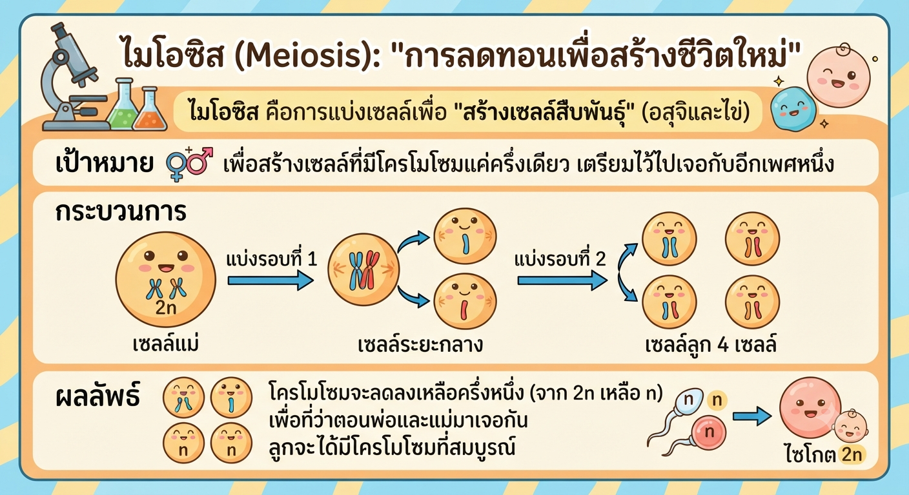

กลไกการสืบพันธุ์และการแบ่งเซลล์
1. ทำไมเซลล์ต้องแบ่งตัว?
น้องๆ ลองจินตนาการดูนะครับว่าถ้าร่างกายเราไม่แบ่งเซลล์เลย เราก็จะตัวเท่าเดิมตั้งแต่เกิด แต่เพราะเซลล์ในร่างกายเรา "ขยันแบ่งตัว" เราถึงสูงขึ้น แผลที่ถลอกถึงหายได้ และที่สำคัญที่สุดคือ ทำให้เกิดลูกหลานเพื่อให้เผ่าพันธุ์เรายังอยู่ต่อไปได้นั่นเองครับ
2. ไมโทซิส (Mitosis): "การถ่ายเอกสารแห่งชีวิต"
ไมโทซิส คือการแบ่งเซลล์ร่างกายครับ
- เป้าหมาย: เพื่อเพิ่มจำนวนเซลล์ให้ร่างกายโตขึ้น หรือซ่อมแซมส่วนที่สึกหรอ
- กระบวนการ: เซลล์แม่ 1 เซลล์ แบ่งออกมาเป็นเซลล์ลูก 2 เซลล์
- ผลลัพธ์: เหมือนต้นฉบับเป๊ะ! ข้อมูลทางพันธุกรรม (โครโมโซม) จะเท่าเดิมทุกประการ เหมือนการถ่ายเอกสารที่ได้เนื้อหาเหมือนต้นฉบับทุกตัวอักษร

3. ไมโอซิส (Meiosis): "การลดทอนเพื่อสร้างชีวิตใหม่"
ไมโอซิส คือการแบ่งเซลล์เพื่อ "สร้างเซลล์สืบพันธุ์" (อสุจิและไข่)
- เป้าหมาย: เพื่อสร้างเซลล์ที่มีโครโมโซมแค่ครึ่งเดียว เตรียมไว้ไปเจอกับอีกเพศหนึ่ง
- กระบวนการ: แบ่ง 2 รอบต่อเนื่อง จาก 1 เซลล์ กลายเป็น 4 เซลล์
- ผลลัพธ์: โครโมโซมจะลดลงเหลือครึ่งหนึ่ง (จาก 2n เหลือ n) เพื่อที่ว่าตอนพ่อและแม่มาเจอกัน ลูกจะได้มีโครโมโซมที่สมบูรณ์

สรุปตารางเปรียบเทียบ
| เปรียบเทียบ | ไมโทซิส | ไมโอซิส |
|---|---|---|
| จุดประสงค์ | โต / ซ่อมแซม | สร้างเซลล์สืบพันธุ์ |
| โครโมโซม | เท่าเดิม | ลดลงครึ่งหนึ่ง |
เทคนิคจำแบบติวเตอร์:
ไมโทซิส: "โท = โต" (ใช้เพื่อการเติบโต) ผลลัพธ์ต้อง "เหมือนเดิม"
ไมโอซิส: "ไอ = ไอไข่" (สร้างไข่/อสุจิ) ผลลัพธ์ต้อง "ลดลงครึ่งหนึ่ง"
เขียนโดย: CHINPONG SMART FARM